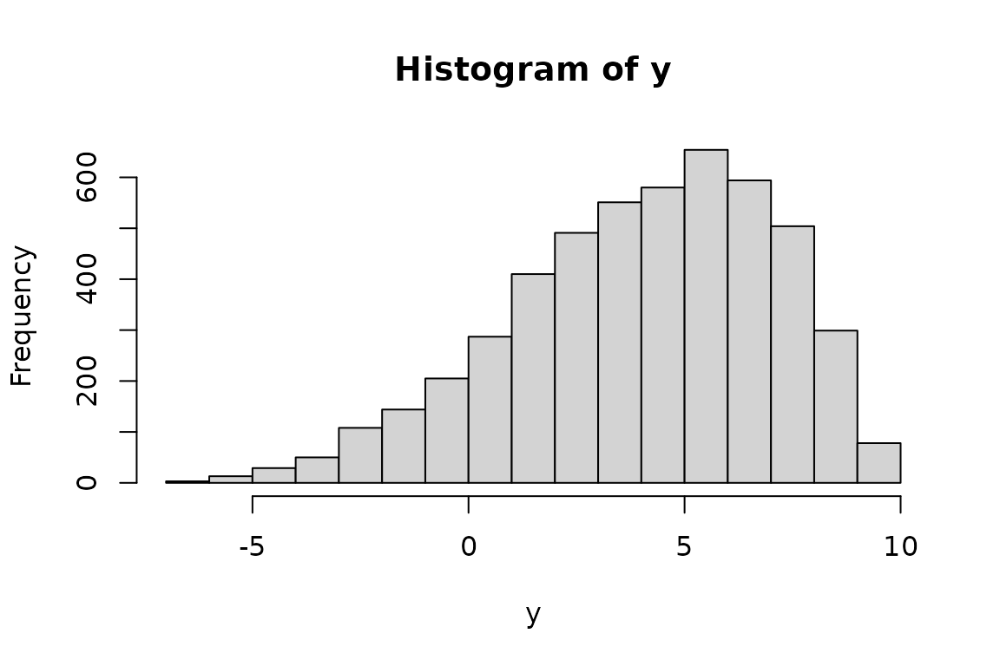

Generate random numbers
from a beta distribution, rescaled to
have user-specified population mean
and standard deviation, and within a
specific range.
Usage
rbeta_rs2(n = 10, bmean, bsd, blow = 0, bhigh = 1)
Arguments
- n
The number of random numbers
to generate.
- bmean
The population mean.
- bsd
The population standard
deviation. If bsd is zero or
negative, all random numbers will be
equal to bmean.
- blow
The lower bound of the
target range.
- bhigh
The upper bound of the
target range.
Value
A vector of the generated
random numbers.
Details
First, specify the two parameters,
shape1 and shape2, and the
desired population mean and standard
deviation. The random numbers, drawn
from a beta distribution by
stats::rbeta() will then be
rescaled to the desired population range.
Examples
set.seed(90870962)
x <- rbeta_rs2(n = 5000,
bmean = .80,
bsd = .10,
blow = .00,
bhigh = .95)
mean(x)
#> [1] 0.7991104
sd(x)
#> [1] 0.1005175
hist(x)
y <- rbeta_rs2(n = 5000,
bmean = 4,
bsd = 3,
blow = -10,
bhigh = 10)
mean(y)
#> [1] 4.003419
sd(y)
#> [1] 3.045306
hist(y)
